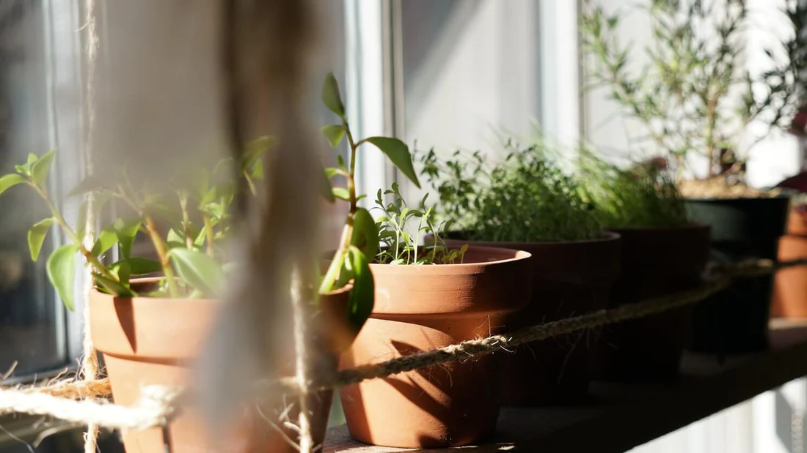
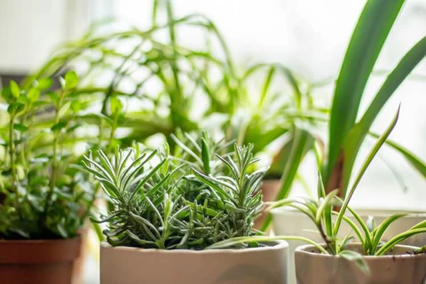
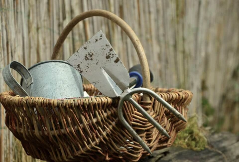
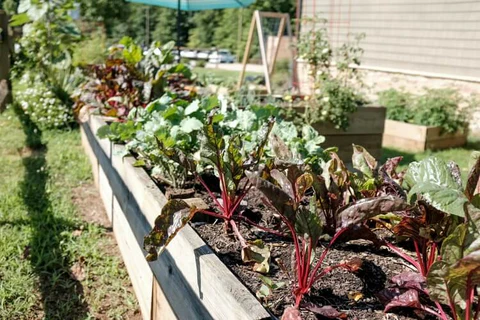
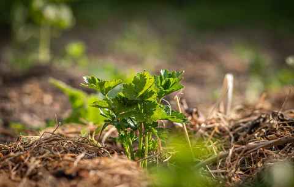
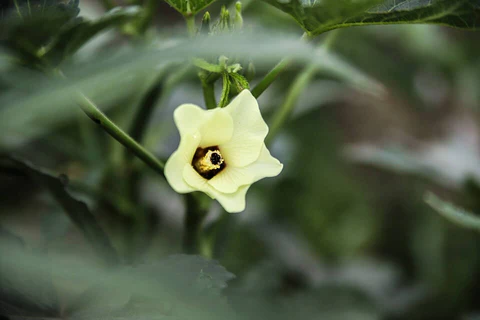
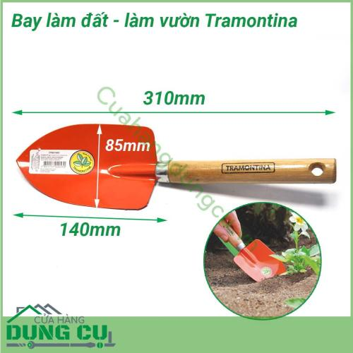

Làm vườn - Nghệ thuật làm đẹp ngôi nhàVườn tược làm đẹp ngôi nhà của bạn và là cách tuyệt vời để thư giãn sau giờ làm việc. Nếu bạn mới bắt đầu làm vườn, hãy xây dựng khu vườn của mình với những bước dễ thực hiện sau đây:
Chọn vị trí phù hợp
Luôn tốt hơn khi bắt đầu bằng những bước nhỏ để đạt được thành công lớn. Hãy chọn một không gian nhỏ để bắt đầu xây dựng khu vườn của bạn. Đảm bảo không gian bạn chọn nhận được 5-6 giờ ánh sáng mặt trời trực tiếp. Tránh nơi có gió mạnh, vì nó có thể làm đổ cây non và cây đang phát triển. Gió cũng có thể ngăn cản các loài thụ phấn làm nhiệm vụ của chúng. Cuối cùng, hãy cân nhắc khả năng tiếp cận khu vườn của bạn để tưới nước, thu hoạch và chăm sóc cây. Như người ta thường nói, "xa mắt, xa lòng".
Chọn loại vườn
Sau khi xác định vị trí phù hợp cho khu vườn, bước tiếp theo trong hành trình làm vườn của bạn là chọn loại vườn bạn muốn. Bạn muốn một biển hoa rực rỡ, một khu vực đầy thảo mộc đẹp mắt, một vườn bếp cho người đầu bếp tiềm năng trong bạn, hay một vườn rau dinh dưỡng để giữ sức khỏe và vóc dáng? Dù bạn chọn gì, hãy bắt đầu bằng những bước nhỏ để vẽ nên bức tranh khu vườn hoàn hảo của mình.

Cải thiện đất trồng
Cây cối luôn được lợi từ đất làm vườn giàu dinh dưỡng. Hãy bắt đầu bằng cách kiểm tra kết cấu đất của bạn; đất nên dễ đào và vụn ra khi bạn cầm trong tay. Nếu đất của bạn cứng và có kết cấu như đất sét, cây sẽ khó phát triển rễ. Nếu đất có nhiều đá, hãy cày xới và loại bỏ đá. Cải thiện chất lượng đất không khó như bạn nghĩ, và nó mang lại nhiều lợi ích. Thêm phân hữu cơ làm từ bã trà, vỏ rau củ vào đất để nâng cao chất lượng.
Chuẩn bị dụng cụ cơ bản
Khi đã có kế hoạch, bạn sẽ cần một số công cụ làm vườn cơ bản để bắt đầu. Dưới đây là danh sách một số công cụ cần thiết: Những thứ cần có: Một công cụ mà mọi người làm vườn nên sở hữu là kéo cắt tỉa. Bạn sẽ dùng nó để cắt tỉa cây và bụi, đồng thời duy trì sức khỏe cây bằng cách cắt bỏ phần chết. Công cụ đào: Bạn cần một vài dụng cụ để đào và chuẩn bị đất trước khi trồng. Bao gồm xẻng, bay nhỏ và cào vườn. Xẻng và bay nhỏ dùng để đào lỗ cho cây, trong khi cào vườn dùng để phá các tảng đất lớn hoặc dọn rễ cây cũ và cỏ dại. Công cụ tưới nước: Dụng cụ tốt nhất để tưới nước dồi dào cho vườn là ống tưới và bình tưới. Ống tưới phù hợp cho các công việc lớn như tưới cây và khu vực rộng. Với cây nhỏ và nhạy cảm, bình tưới là lựa chọn tốt hơn. Cây non sẽ cảm ơn bạn vì sự tưới nhẹ nhàng. Công cụ nhổ cỏ: Để xử lý cỏ dại và loại bỏ cây không mong muốn, bạn cần bay nhỏ có đầu nhọn và dao làm vườn. Hai dụng cụ này giúp bạn giữ khu vườn sạch sẽ.

Chọn cây trồng phù hợp
Đây là phần thú vị nhất trong quá trình làm vườn - chọn cây xanh của bạn. Trước khi vội vàng quyết định trồng gì, hãy dành thời gian nghiên cứu về cây. Một số cây thích ánh sáng trực tiếp, trong khi những cây khác ưa bóng râm. Bạn có thể kiểm tra thông tin này trên bao bì hạt giống. Chọn cây bản địa khu vực của bạn sẽ giúp bạn dễ dàng hơn, đặc biệt khi bạn sắp trở thành "cha mẹ cây". Bạn cũng có thể nhìn sang khu vườn của hàng xóm để xem cây gì phát triển tốt hoặc đọc hướng dẫn của chúng tôi về những loại rau tốt nhất để trồng theo tháng. Những cách này sẽ giúp bạn có ý tưởng về loại cây nào sẽ phát triển tốt trong vườn của bạn.
Lên kế hoạch bố trí
Trước khi bắt tay vào trồng cây, hãy lập kế hoạch! Lập kế hoạch: Vẽ bản đồ vị trí cho từng cây, chú ý khoảng cách chi tiết. Như con người, cây cũng cần không gian riêng. Nếu đặt cây non quá gần nhau, sự phát triển của chúng có thể bị ảnh hưởng, dễ mắc bệnh hoặc thậm chí chết. Gắn nhãn: Chúng ta đều có lúc quên. Để biết cây gì trồng ở đâu và nhận diện chúng, hãy làm nhãn nhỏ và đặt cạnh cây. Bạn có thể sáng tạo với nhãn để có cách ghi độc đáo. Tổ chức: Lời khuyên tuyệt vời cho người mới bắt đầu là tự làm sổ tay vườn và ghi lại tiến trình. Bạn có thể thêm bản vẽ, hình ảnh, nhãn và ghi chú để theo dõi sự phát triển của từng cây ở các khu vực khác nhau, sau đó lập báo cáo tiến độ để hiểu rõ đặc tính của cây.
Thiết kế luống/bồn trồng
Sau khi lập kế hoạch, hãy quyết định loại và kích thước luống vườn. Luống nổi trông hấp dẫn và dễ làm việc hơn. Làm vườn theo luống hoặc khối tiện lợi hơn so với trồng theo hàng đơn. Luống nên rộng 3-4 feet, đủ hẹp để bạn với tới giữa từ hai bên. Chiều dài luống nên khoảng 8-10 feet, giúp bạn di chuyển dễ dàng mà không dẫm lên khu vực trồng. Bắt đầu nhỏ và dành không gian cho từng cây phát triển. Hạt giống và cây ghép nhỏ, nhưng cây trưởng thành có thể lớn lên, khiến khu vực quá đông đúc và khó phát triển. Trong luống, sắp xếp cây theo hàng hoặc lưới. Mục tiêu là giảm lối đi và tối đa hóa không gian trồng. Điều này cũng tiết kiệm thời gian và tiền bạc khi chỉ cần bón phân và cải tạo đất cho khu vực trồng.

Trồng cây đúng cách
Khi đã chuẩn bị xong, hãy bắt đầu trồng. Hầu hết bao bì hạt giống đều có hướng dẫn cơ bản. Hãy thử và bạn sẽ dần thành thạo kỹ năng trồng cây. Nguyên tắc cơ bản: Trồng hạt sâu gấp 3-4 lần đường kính hạt, trừ khi bao bì ghi khác. Che hạt bằng đất và tưới nước kỹ, đảm bảo không để hạt lộ ra. Cấy ghép: Khi di chuyển cây non từ chậu sang vị trí cuối cùng, đào lỗ rộng gấp đôi bầu rễ. Xới đất, thêm phân bón hữu cơ để thúc đẩy tăng trưởng. Đặt bầu rễ và phủ hoàn toàn rễ bằng đất. Tưới nước nhẹ sau khi cấy.
Tưới nước hợp lý
Mục tiêu của việc tưới nước là cung cấp đủ nước để cây phát triển, nhưng tưới quá nhiều có thể gây úng, làm hỏng cây. Cách tốt nhất là tưới chậm, để nước thấm sâu vào đất. Đất nên ẩm ở độ sâu 3-4 inch. Cây cần nhiều nước hơn trong mùa hè nóng. Đọc hướng dẫn của chúng tôi về tưới cây mùa hè để cây phát triển tối ưu. Cây ở các giai đoạn phát triển khác nhau cần lượng nước khác nhau. Cây non cần tưới hàng ngày để khuyến khích tăng trưởng và rễ khỏe mạnh, trong khi cây trưởng thành cần tưới 2-3 ngày/lần, tùy điều kiện thời tiết.

Bón phân hữu cơ
Có câu nói xưa: "Phân bón là bạn tốt nhất của người làm vườn." Hãy tự làm phân bón hữu cơ để tăng cường sự phát triển cho cây. Bắt đầu với compost - vật liệu hữu cơ có thể thêm vào vườn để giúp cây phát triển. Có thể dùng túi trà, cà phê xay, cỏ cắt, vỏ trái cây nghiền, v.v. Thêm phân hữu cơ vào đất giúp giữ ẩm, kích thích vi khuẩn tốt, chống sâu bệnh và giảm dấu chân carbon của bạn.
Phòng trừ sâu bệnh tự nhiên
Sâu bệnh thường bị thu hút bởi cây bị căng thẳng hoặc thiếu dinh dưỡng. Nếu cây khỏe mạnh và được nuôi dưỡng tốt, vấn đề sâu bệnh sẽ ít hơn. Nếu cây bị nhiễm, có thể có giải pháp hữu cơ. Bạn có thể tự làm thuốc trừ sâu tại nhà bằng cách trộn dầu neem, nước và vài giọt xà phòng rửa bát. Lắc đều và phun lên cây 2 tuần/lần để xua đuổi sâu bọ!
Phủ gốc bằng mùn hữu cơ
Tùy loại cây bạn trồng, hãy cân nhắc loại mulc tốt nhất. Tại sao ư? Mulc giúp cung cấp chất dinh dưỡng cho đất và bảo vệ chống xói mòn. Mulc là vật liệu rải hoặc phủ trên bề mặt đất. Nó giúp giữ ẩm, giữ mát đất, ngăn cỏ dại và làm luống vườn trông đẹp hơn. Khi mulc hữu cơ phân hủy, nó cũng cải thiện độ phì của đất.

Trồng rau củ dễ trồng trước
Không gì tuyệt bằng rau tươi từ vườn nhà. Những loại rau mọng nước, thơm ngon mà bạn có thể hái và ăn ngay. Mỗi vùng có thời điểm trồng khác nhau dựa trên thời tiết, và mỗi loại rau có sở thích nhiệt độ riêng. Bắt đầu với rau dễ trồng như cà chua, củ cải, ớt chuông, thảo mộc, và lá salad như xà lách, cải xoăn, rocket, ớt. Khi thành thạo, bạn có thể thử trồng bắp cải, bông cải xanh cần nhiều thời gian và công sức hơn. Chọn các loại hạt rau thân thiện với người mới bắt đầu và đặt hàng để tự trồng khu vườn bếp của bạn.

Trồng cây trong chậu/khay
Làm vườn trong chậu là cách tuyệt vời để trồng cây khi không gian hạn chế. Gần như mọi loại hoa, rau, thảo mộc, cây bụi đều có thể trồng trong chậu. Cây lùn và compact phù hợp với chậu nhỏ. Chọn cây phù hợp với khí hậu và lượng ánh sáng hoặc bóng râm mà chậu nhận được. Húng quế, hẹ, cỏ xạ hương và các loại thảo mộc khác rất thích hợp trong chậu, đặt ngay ngoài cửa bếp cho tiện. Dù chọn chậu gì, lỗ thoát nước là điều bắt buộc. Không có thoát nước tốt, đất có thể bị úng và cây sẽ chết. Lỗ không cần quá lớn, nhưng phải đủ để nước thừa thoát ra. Bạn sẽ cần tưới chậu thường xuyên hơn cây trồng trên đất, vì đất trong chậu khô nhanh hơn..

Trồng cây ở hộp cửa sổ
Đừng lo nếu bạn có vườn nhỏ hoặc không có vườn - bạn vẫn có thể trồng cây xanh. Hộp cửa sổ có thể trồng từ trái cây, rau đến cây lâu năm và cây hàng năm. Nó làm sáng bừng ngoại thất ngôi nhà với hoa và cây xanh. Tất nhiên, không chỉ dành cho không gian nhỏ - vườn lớn cũng được lợi từ màu sắc và sự thay đổi về chiều cao mà chúng mang lại.
Trồng xen canh hợp lý
Như con người, cây cũng có sở thích về "bạn đồng hành". Trồng xen canh là trồng các loại cây khác nhau trong cùng khu vực để tối ưu không gian, xua đuổi sâu bệnh và cung cấp chất dinh dưỡng. Một số loài phát triển tốt khi trồng gần nhau, trong khi những loài khác có thể kìm hãm sự phát triển của nhau. Ví dụ, cà chua cho năng suất cao hơn (và xua muỗi, ruồi) khi trồng cùng húng quế. Các "đồng minh" của cà chua bao gồm măng tây, cà rốt, cần tây, hành, xà lách, hoa cúc, mùi tây và rau bina. Tránh trồng cà chua gần bắp cải, củ dền, ngô, thì là, khoai tây và hương thảo.
Cắt tỉa, tạo tán hợp lý
Bảo dưỡng đúng cách là điều tuyệt vời và mang lại phần thưởng lớn nhất cho khu vườn của bạn. Dành thời gian để nhổ cỏ, tỉa cây, dọn dẹp vườn. Nếu thấy cây phát triển chậm, kiểm tra rễ bằng cách đào nhẹ đất xung quanh. Loại bỏ sâu bệnh bằng biện pháp phù hợp. Tưới nước đều đặn và bổ sung chất dinh dưỡng định kỳ. Vậy là xong, bắt đầu một khu vườn không đáng sợ như bạn nghĩ. Dù bạn là chuyên gia làm vườn hay không, bạn vẫn có thể tận hưởng khu vườn nở rộ hàng năm nếu lập kế hoạch tốt, chọn cây cẩn thận và tăng cường dinh dưỡng cho đất. Mua hạt giống online và bắt tay vào làm thôi!
Duy trì và chăm sóc thường xuyên
Thường xuyên nhổ cỏ, tỉa lá, kiểm tra sâu bệnh, tưới nước, bón phân để vườn luôn xanh tốt.

Mẹo nhanh
- Bắt đầu với không gian nhỏ
- Chọn cây phù hợp với khí hậu
- Tưới nước đúng cách
- Sử dụng phân hữu cơ
- Kiểm tra sâu bệnh thường xuyên
Dụng cụ cần thiết

Kéo cắt tỉa
Dụng cụ không thể thiếu
Bay làm đất
Chuẩn bị đất trồng
Vòi tưới nước
Tưới nước hiệu quảHỗ trợ tư vấn
Cần tư vấn thêm về kỹ thuật làm vườn?